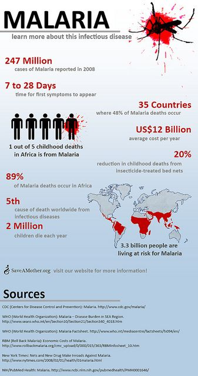
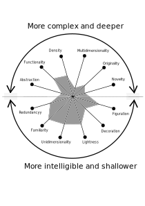
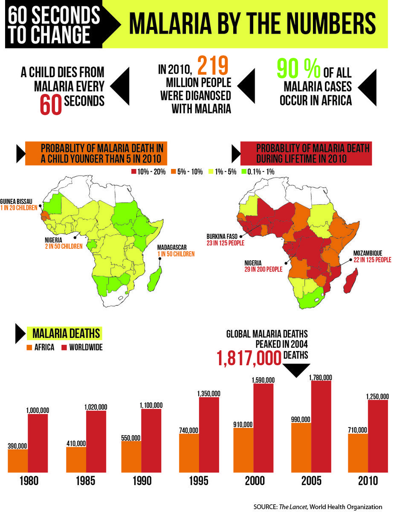
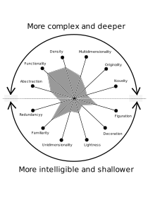

Information Visualizations Analysis
A brief break down of two different "World Malaria Stastics" visualizations using a visualization wheel
MALARIA
Malaria is a mosquito-borne infectious disease affecting humans and other animals caused by parasitic single-celled microorganisms belonging to the Plasmodium group. Malaria causes symptoms that typically include fever, tiredness, vomiting, and headaches. In this article we will try to critique the infographics on world malaria stastics by two very prominent sources which get cited in multimple news media articles and themselves are a concrete news portal for many. One is the World Health orzanization and the other is Center for disease control and prevention (CDC)

Image 1

Well Done
A simple depection of some basic facts and figures related to malaria. Does not overcomplicate the depection and is good mix of all the qualities and generally lies more on the intelligible and shallower side of the wheel.
- Figuration/Abstraction - It almost has a fifty - fifty division between figuration and abstraction. In the case of death toll explanation the relation is mimetic and not purely conventional as there does exist a relation between referent and the representation
- Decoration/Functionality - Functionality is more than decoration in the case of map and the death toll representation. Only peace of decoration is at the top right corner which does not display any unique information.
- Lightness/Density - The infographic errs on the side lightness as opposed to density. Even though it has more than dequate space available.
- Unidimensionaltiy/Multidimensionality - Highly Unidimentional in all it's figurations and abstractions, but it does provide some additional information just below the information
- Familiarity/Originality - Highly familiar from a layman's perspective except maybe the map which might be new to some readers
- Redundancy/Novelty - There was slight redudndancy as to show case a death toll ratio, one figure got repeated several times. Very little novelty factor in the infographic
Not well done
- Figuration/Abstraction - Wastage of space as information gets repeated twice in terms of Map and then writing of actual figures with text. There was no actual figuration in terms of the topic "Malaria". Only two figures were used which is extremely less, when there is much information to be conveyed.
- Decoration/Functionality - The amount of decoration is just enough but there is high lack of functionality
- Lightness/Density - It is light but there is a lot of vacant space available. The space has not been utilized effectively
- Unidimensionaltiy/Multidimensionality - Unidimensional representation might be easier for the reader to understand but the data could have been represented in multidimensional data upto three variables, that too in more than two figurations/abstractions
- Familiarity/Originality - Lacked originality, reader might like familiarity but one original element might have acted as a attention catcher.(Beauty Paradox- Cairo)
- Redundancy/Novelty - There was no redundancy as such but there was no novelty as well. Which again indicated wastage of space (data - ink ratio - Cairo).
Suggestions
- Instead of presenting figures a pie chart could have been used.
- For functionality a dot map could have been used which indicated the percentages as well as the cost per avg per area as opposed to an overall cost.
- A lot of additional data realted to the infographics was available sparsely throught the article. This information like further breakdown of the facts and figures could be represented on the infogrpahics instead making it a part of a smaller image or text
- Map could have been made multi-dimensional by using shades of colour, different colour and the area on the map. Other multi-dimensional abstractions/figuration like Alluvial chart could have been used.
- More original depections were needed example. Different sizes of mosquito or the level of blood in their proboscis
- Instead of using multiple people , the depection could have used a single sunburst plot.

Image 2

Well Done
- Figuration/Abstraction - The depection does use figuration as it tries to highlight on the African Continent the ratio. It is extremeley appropriate for this type of data also in addition arrow markers make it more informative
- Decoration/Functionality - A highly functional depection with paired bar graphs and map plots, get the information appropriately across.
- Lightness/Density - The depection achieves a balance between being dense and light.
- Unidimensionaltiy/Multidimensionality - The infographic is able to utilise multi-dimensional plots both in the case of bar graphs and the map plot
- Familiarity/Originality - Bar graph and the map plots are highly familiar to the reader which makes it easy to read like a text. The infogrpahic also introduces an original presentation by arrows after highlighted text.
- Redundancy/Novelty - There is slight novelty and slight redundancy. Novelty as bar graphs are only used once to depict time series data which is appropriate.
Not well done
- Figuration/Abstraction - There is no abstraction. A mix would be make the infographic well rounded.
- Decoration/Functionality - No decoration in the infographic
- Lightness/Density - Space could have been better utilized if two of the same maps might not have been used.
- Unidimensionaltiy/Multidimensionality - More multi-dimesional plots were needed
- Familiarity/Originality - Lacks any original chart or infograph, which might have helped get reader's attention
- Redundancy/Novelty - There is slight redundacy due to same map (cartogram) appearing twice only to display slightly differnt information.
Suggestions
- Certain figurations could have been added like mosquitoes or people
- Some decorations could have been added to the infographics
- Instead of a second map, the same information could have been shown on the first map with a third variable like an overlap with a dot map
- Orginal infographics should have been present to capture the attention. A sunburst plot would also been ideal choice to inform of further data.
- More elements could have been added like a proportional symbol map